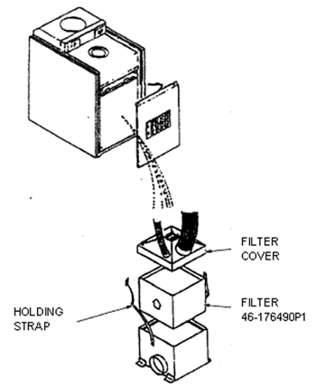
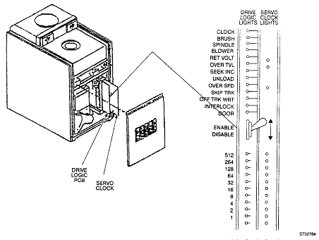

Operating Documentation
Direction 5112972-800, Rev# 2
CT Planned Maintenance Procedures
Operating Documentation |
| Required Persons | Preliminary Reqs | Procedure | Finalization |
|---|---|---|---|
| 1 | Timing Not Applicable | 15 mins | Timing Not Applicable |
Procedure Effectivity:
| Assembly: | ZEBRA DISKS |
| Subassembly: | |
| Purpose: | Replace Absolute Filter |
| Last Revised: | July 1995 |
| Item | Qty | Effectivity | Part# | Manufacturer | |
|---|---|---|---|---|---|
| Standard FE Toolkit | 1 | - | - | - | |
| Item | Qty | Effectivity | Part# | Manufacturer | |
|---|---|---|---|---|---|
| Filter | 1 | - | 46-176490P1 | - | |
Boot down the system - cancel to “R" level then type release DZ0<CR>. You should get the “!" prompt.
Power down the spindle. When it stops, turn off the DC power switch.
Remove the front cover (See Illustration 1).
Illustration 1: Accessing Filter Location

Loosen, then unfasten the filter holding strap (See Illustration 1).
Remove the filter.
Install new filter with the air flow arrow pointing up. Be very careful not to damage the filter or the filter edge seal when installing it.
Tighten the holding strap snugly.
Write the date on the new filter.
Disable the servo by flipping the switch on the edge of the drive logic board (See Illustration 2).
Illustration 2: Drive Logic Board

Power-up DC power and spindle and carefully check for air leaks around the top and bottom of filter.
Examine old filter input side. It should be either white like the output side or slightly gray from dirt. If it is excessively gray with dirt, then the frequency of changing the filter should be increased to four per year instead of two per year.
Power-down the spindle to reset fault led.
Re-enable the servo switch.
Replace the covers and return to normal operation.
No finalization required.